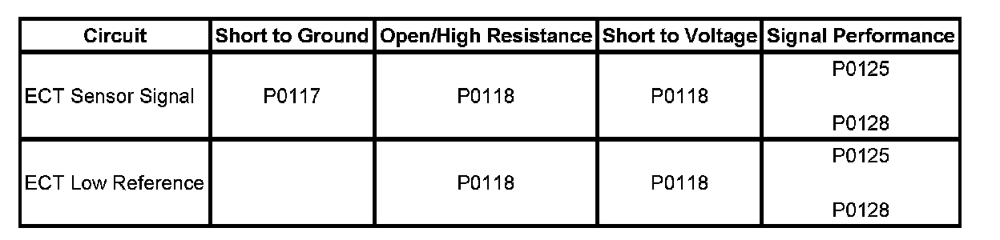
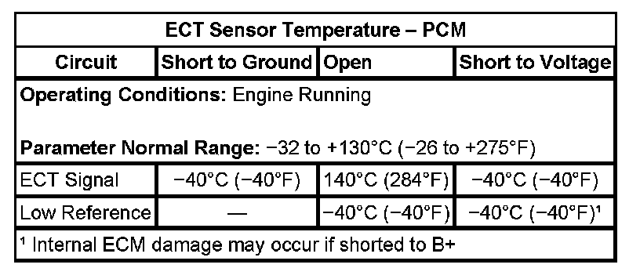

Diagnostic Procedure Instructions
DIAGNOSTIC PROCEDURE INSTRUCTIONS
The following is an overview of instructions for all 16 categories which may be included in a diagnostic procedure.
Diagnostic Instructions
A link to the Diagnostic System Check - Vehicle is provided here. This procedure should be performed prior to performing other diagnostic procedures, as this prevents misdiagnosis where there are integrated system dependencies.
A link to the Strategy Based Diagnosis is provided here. This provides an overview on how a technician should diagnose a vehicle.
A link to the Diagnostic Procedure Instructions is provided here. This information is an overview of instructions for all 16 categories which may be included in a diagnostic procedure.
DTC Descriptor
Describes what DTCs are diagnosed in this procedure. The DTC number, with Symptom Description when applicable, and descriptor are written out.
Diagnostic Fault Information
The diagnostic Fault Information table identifies each circuit that makes up an electrical subsystem and the associated circuit faults. DTCs and symptoms are listed in the table for all circuit fault modes. This information can be used to diagnose an electrical fault, or as a quick visual aid showing how the different symptoms and DTCs apply for the subsystem being diagnosed.
Even though all the DTCs and symptoms are shown in this table it does not mean they will all be diagnosed in the same procedure.

An example table from an engine coolant temperature (ECT) procedure:
Typical Scan Tool Data
The Typical Scan Tool Data table identifies a scan tool data parameter and its value in reference to potential circuit faults.
ECT Sensor Temperature - PCM:

An example table from an ECT procedure:
Circuit/System Description
Circuit/System Description identifies how a circuit/system normally functions.
Conditions For Running The DTC
Conditions for running the DTC, identifies what conditions must be present to allow the diagnostic to run.
Conditions For Setting The DTC
Conditions for Setting the DTC, identifies the condition(s) that must be present in order to fail the diagnostic and when to set the DTC.
Action Taken When The DTC Sets
Actions Taken When the DTC sets, identifies the default actions taken when a control module sets a DTC.
Conditions For Clearing The DTC
Conditions for Clearing the DTC, identifies the conditions that must be met in order to clear the DTC.
Diagnostic Aids
Diagnostic Aids are suggestions which explain other methods to diagnose the condition. It also provides unique information about the system used to assist the technician in finding and repairing a vehicle condition.
Circuit/System Verification
The diagnostic format does not force a technician to any of the 3 diagnostic categories (Circuit/System Verification, Circuit/System Testing and Component Testing). However, performing the Circuit/System Verification category first, aids in determining if a vehicle condition is current. This category also serves to route the technician to another diagnostic procedure which should be performed first; for example, a DTC with a higher priority.
Circuit/System Verification is a non-intrusive procedure outlining how to verify that a system or a portion of a system is functioning correctly. During the verification process, the vehicle is kept intact and tested as a complete system. This verification is used to assist the technician in determining whether a condition is current or intermittent. When a condition is determined to be intermittent, a technician can use the link in Electrical Information Reference: Testing for Intermittent Conditions and Poor Connections.
The technician should be able to identify if the fault is occurring on the input circuit - signal or on the output circuit - control when applicable. The technician will need to decide from the verification results if the system is working correctly or if further diagnosis needs to be performed in either Circuit/System Testing and/or Component Testing.
Circuit/System Testing
The diagnostic format does not force a technician to any of the 3 diagnostic categories (Circuit/System Verification, Circuit/System Testing and Component Testing). However, beginning with the Circuit/System Verification category aids in determining if a vehicle condition is current.
Circuit/System Testing is a step by step, positive-flow, testing sequence which allows the technician to perform each test step, in sequence, until a fault is detected. If the result of a test step is achieved, the normal flow is to proceed to the next step. If the result is NOT achieved, the repair arrow bullet will identify what actions need to take place.
Intrusive diagnostics are performed to locate the system fault. System harness connections are disconnected from the module or component to test individual circuit functions. The module or component will be used to assist in verifying the circuit function. When a test does not pass, the repair steps will indicate what circuit faults to test. For example, short to voltage, short to ground or open/high resistance.
When testing for individual circuit faults, the technician is expected to include terminal inspections such as connection surfaces and terminal tension at both the harness and component/module. Additionally, a technician can use the links in Electrical Information Reference: Testing for Intermittent Conditions and Poor Connections or Circuit Testing.
The control modules and components will also be diagnosed during these test steps. A retest of a control module or component should always be performed before replacement. For example, re-connect all components and modules and retest the system to verify the condition still exists before replacing modules or components.
Component Testing
The diagnostic format does not force a technician to any of the 3 diagnostic categories (Circuit/System Verification, Circuit/System Testing and Component Testing). However, beginning with the Circuit/System Verification category aids in determining if a vehicle condition is current.
Component Testing can offer static and/or dynamic component tests. These tests can be used to verify if a component is operating correctly to avoid unnecessary replacement.
Testing modules in this category will not be offered. In most cases, the module is used to verify the harness circuits in the Circuit/System Testing category and a retest of the module should always be performed before replacement.
Repair Instructions
Repair Instructions provides a link to Diagnostic Repair Verification. This link describes how to verify the vehicle is repaired.
All links to Repair or Replacement procedures are located here.
Repair Verification
Repair Verification describes how to verify the vehicle is repaired when additional instructions are needed beyond what is in Diagnostic Repair Verification.